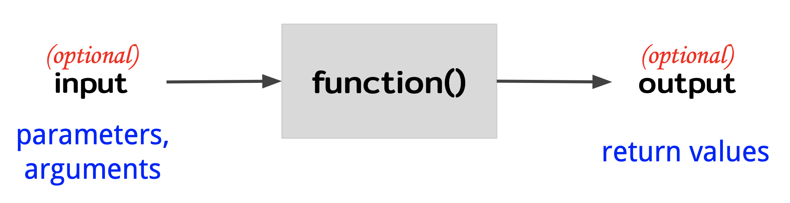

ตัวแปรและฟังก์ชัน
Contents
ตัวแปรและฟังก์ชัน#
ตัวแปร (variable)#
ลองนึกถึงสมัยประถมที่เราเริ่มเรียนวิธีการตั้งหารยาว หรือการคูณเลขสามหลักด้วยมือ ซึ่งก็มีอัลกอริธึมที่ค่อนข้างซับซ้อนที่ต้องทำด้วยมือซ้ำๆ จนชำนาญ อย่างหนึ่งที่สังเกตจากการตั้งหารยาวคือ ต้องมีการทดเลข จดไว้สักที่หนึ่ง เพื่อจะนำเอาผลการคูณหารของเลขแต่ละหลักมารวมกันอีกครั้งตอนสุดท้ายที่เพื่อที่จะได้ผลลัพธ์สุดท้าย การทดเลข เปรียบได้กับการเก็บข้อมูลเอาไว้ในตัวแปรเพื่อจะนำมาใช้ทีหลัง
การเก็บข้อมูลใส่ตัวแปรเพื่อนำค่ามาใช้ทีหลัง เรียกว่า การกำหนดค่าให้ตัวแปร (variable assignment) ซึ่งจะต้องบอกเครื่องว่าชื่อของตัวแปรคืออะไร และค่าที่ต้องการ คำสั่งภาษาไพธอนมีกฏดังนี้
ชิื่อตัวแปร = ค่่าที่ต้องการเก็บ
ตัวอย่าง เช่น ถ้าเราต้องการสร้างตัวแปรที่ชื่อว่า num_words เพื่อให้เก็บจำนวนคำที่เรานับมาได้จากบทความชิ้นหนึ่ง ซึ่งสมมติว่ามีค่าเท่ากับ 5000
num_words = 5000
ข้อควรระวังอย่างหนึ่งคือ ชื่อตัวแปรจะต้องมีลักษณะดังนี้ คือ
ต้องขึ้นต้นด้วยตัวอักษรเท่านั้น (ห้ามใช้ตัวเลขหรือเครื่องหมายขึ้นต้น)
ห้ามใช้คำที่สงวน เช่น
forwhiledefฯลฯ ซึ่งเป็นคำที่สงวนใช้สร้างคำสั่งอื่น ๆห้ามมีช่องว่างเลย
ถ้าเกิดว่าไม่เขียนคำสั่งตามกฏ interpreter จะชี้บอกว่าเจอข้อผิดพลาด (error) ที่ไฟล์ไหน และบรรทัดที่เท่าไร ส่วนไหนของโค้ด และบอกด้วยว่าเป็น SyntaxError เช่น
>>> number of words = 5000
File "myprogram.py", line 1
number of words = 5000
^
SyntaxError: invalid syntax
เป็นเพราะใส่ช่องว่างในชื่อตัวแปร
นอกจากนั้นแล้วชื่อตัวแปรที่ดีควรมีลักษณะดังนี้
บ่งบอกถึงค่าที่ตัวแปรนั้นเก็บไว้ เช่น
num_wordsเพื่อเก็บจำนวนคำเป็นคำนาม เพราะว่าตัวแปรเปรียบได้กับสิ่งของ
ควรเป็นตัวภาษาอังกฤษ ตัวเล็กทั้งหมด
ถ้าชื่อตัวแปรมีหลายคำประกอบกันให้ ให้คั่นแต่ละคำด้วยตัวขีดล่าง
_เช่นnumber_of_wordsอย่าให้มีความยาวจนเกินไป
ทั้งนี้เพราะหากมีตัวแปรหลายตัว อาจจะสับสนได้ว่าตัวแปรไหนเก็บอะไร ทำให้ทำความเข้าใจและแก้ไขโค้ดได้ลำบาก โดยเฉพาะอย่างยิ่งเวลานำโค้ดเป็นทีม จะต้องเขียนโค้ดให้คนในทีมอ่านรู้เรื่องได้ง่ายด้วย
สมมติว่าเราต้องการหาจำนวนคำโดยไม่นับเครื่องหมายวรรคตอน เพื่อให้ได้จำนวนคำที่แท้จริง สมมติว่าเราจำนวนเครื่องหมายวรรคตอนที่นับได้เท่ากับ 200 ตัว เราสามารถหาจำนวนโดยการสร้างตัวแปรขึ้นมาอีกตัวและหักลบกันดังนี้
num_words = 5000
num_punctuations = 200
num_words_no_puncs = num_words - num_punctuations
หากเราอยากทราบค่าของ num_word_no_puncs เราสามารถบอกให้เครื่องแสดงผลออกมาได้
>>> print(num_words_no_puncs)
4800
โค้ดที่อยู่ทางขวาของเครื่องหมาย = เรียกว่า นิพจน์ (expression) ซึ่งก็คือการนำตัวแปร ค่าคงที่มากระทำต่อกัน อย่างเช่นในตัวอย่างข้างบนที่เรานำตัวแปร num_words กับ num_punctuations มาลบกันโดยใช้ตัวดำเนินการ (operator หรือเรียกอีกอย่างว่า operand) -
เวลาสร้างตัวแปรใหม่ Python interpreter จะแปลผลจาก expression ก่อนแล้วค่อยให้ค่ากับตัวแปรที่มีชื่ออยู่ทางซ้ายมือ เพราะฉะนั้นลองคิดว่าดูว่าโค้ดข้างล่างนี้จะแสดงผลอะไรออกมา
num_words = 5000
num_punctuations = 200
num_words_no_puncs = num_words - num_punctuations
num_punctations = 1000
print (num_words_no_puncs)
คำตอบคือ 4800 เท่าเดิมเนื่องจากเครื่องตีความผลของ num_words - num_punctuations ไปเสร็จเรียบร้อยแล้ว การแก้ค่าของตัวแปร num_punctuations = 1000 ในบรรทัดต่อมา ไม่มีผลต่อค่าของ num_words_no_puncs ที่ถูกจัดเก็บไว้แล้ว
ชนิดของตัวแปร (variable type) และข้อมูล (data type)#
ตัวแปรในภาษาไพธอนมีหลายชนิด (type)
intย่อมาจาก integer มีไว้เก็บจำนวนเต็ม ตัวเลขที่ไม่มีจุดทศนิยมfloatมีไว้เก็บจำนวนที่มีจุดทศนิยมstrสตริงมีไว้เก็บข้อความboolมีไว้เก็บบูลีน (boolean) ที่มีค่าTrueหรือFalse
และยังมีอีกมากซึ่งเราจะได้เห็นในบทต่อ ๆ ไป
เวลาเราสร้างตัวแปรและกำหนดค่าให้ตัวแปร เราไม่ต้องเลือกเลยว่าจะต้องใช้ตัวแปรชนิดใด เพราะว่า python interpreter จะแปลค่าจาก expression ที่อยู่ทางด้านขวามือและรู้เองว่าต้องใช้ตัวแปรชนิดใด แต่เราจำเป็นต้องรู้เองว่า expression ได้ผลออกมาเป็นชนิดใด เพื่อจะเลือก operator ใช้ได้ถูกต้อง
int และ float#
เราสามารถสร้าง expression ที่ประกอบด้วย int และ float ด้วยตัวดำเนินการเลขคณิต (arithmetic operator)
ในภาษาไพธอนมีดังนี้
Operator |
ความหมาย |
ตัวอย่าง |
|---|---|---|
+ |
บวก |
3 + 2 –> 5 |
- |
ลบ |
3 - 2 –> 1 |
* |
คูณ |
3 * 2 –> 6 |
/ |
หาร |
3 / 2 –> 1.5 |
// |
หารแบบปัดเศษทิ้ง |
3 // 2 –> 1 |
** |
ยกกำลัง |
3 ** 2 –> 9 |
% |
หารแล้วได้เศษ (mod) |
3 % 2 –> 1 |
นอกจากนั้นแล้วยังมีตัวดำเนินการเปรียบเทียบ (comparison operator) ที่ให้ค่าเป็นบูลีน
Operator |
ความหมาย |
ตัวอย่าง |
|---|---|---|
> |
มากกว่า |
3 > 2 –> |
< |
น้อยกว่า |
3 < 2 –> |
== |
เท่ากัน |
3 == 2 –> |
!= |
ไม่เท่ากับ |
3 != 2 –> |
ตัวอย่าง เช่น
num_words = 5000
pi = 3.14
average_words_per_page = num_words / 6
ทั้ง pi และ average_words_per_page เป็นตัวแปรไทป์ float เพราะ Python interpreter แปลผล expression ทางขวามือแล้วได้ค่าที่เป็นทศนิยม
ถ้าหากเราใช้ operator กับข้อมูลผิดไทป์เช่น
>>> 'ฉันรักภาษาไทย' + 4
Traceback (most recent call last)
<ipython-input-11-1beaa930810f> in <module>
----> 1 'ฉันรักภาษาไทย' + 4
TypeError: can only concatenate str (not "int") to str
Python interpreter จะให้โยน TypeError ซึ่งแปลว่า error ที่เกิดจากการใช้ข้อมูลผิดไทป์ พร้อมทั้งบอกว่าผิดไทป์อย่างไร ในตัวอย่างนี้ บอกว่า operator + ต้องใช้กับสตริงและสตริง ไม่ใช่ สตริงกับ int
>>> 4 + 'ฉันรักภาษาไทย'
Traceback (most recent call last)
<ipython-input-12-1c1a443c69f4> in <module>
----> 1 4 + 'ฉันรักภาษาไทย'
TypeError: unsupported operand type(s) for +: 'int' and 'str'
Python interpreter โยน TypeError และอธิบายว่า operator + ไม่สามารถใช้กับ int และสตริงได้
เพราะเหตุนี้เวลาเราเขียนโปรแกรมเราควรจำให้ได้ว่าไทป์ข้อมูลที่ตัวแปรและตัวเก็บเป็นข้อมูลไทป์ไหน และควรจะทราบด้วยว่าถ้าเครื่องโยน TypeError มาให้ตอนที่เรารันโปรแกรม เราควรจะแก้ไขโดยการตรวจไทป์ของข้อมูลให้เหมาะสม
สตริง#
เบื้องต้นเราสามารถสร้างสตริงเพื่อเก็บข้อความได้ดังนี้
welcome_message = 'Welcome to my world!'
welcome_message เป็นตัวแปรชนิดสตริง เนื่องจาก expression เป็นข้อความโดยเห็นได้จากเครื่อง ' ที่คร่อมข้อความอยู่
ภาษาไพธอนสามารถใช้ operator + และ * กับสตริงได้
Operator |
ความหมาย |
ตัวอย่าง |
|---|---|---|
+ |
ต่อสตริง (concatenate) |
|
* |
ซ้ำสตริง |
|
เราจะศึกษารายละเอียดของการสร้างสตริงในรูปอื่น ๆ ทั้งหมดในบทต่อไป
บูลีน#
ค่าบูลีนสามารถเป็นได้แค่ True หรือ False ให้สังเกตว่าทั้งสองค่านั้นต้องสะกดด้วยตัวใหญ่ตัวแรก
นอกจากนั้นแล้วยังสามารถขึ้นมาได้ด้วยการใช้ comparison operator อีกด้วย
is_long_book = num_words > 10000
จากตัวอย่างข้างบน is_long_book เป็นตัวแปรชนิดบูลีน เพราะว่า expression ตีผลออกมาเป็น False
operator ของบูลีนกับบูลีน ได้แก่ and or เราได้เห็นและใช้กันไปแล้วในบทที่ 1
Reassignment operator#
การให้ค่าใหม่กับตัวแปร (reassignment หรือ update) สามารถทำได้โดยการใช้ = ซ้ำอีกครั้งได้เลย เช่น
num_words = 5000
num_words = 100
ใช้ตัวแปรชื่อเดิม num_words แต่ว่าให้ค่าใหม่กับตัวแปรนั้น ค่าของ num_words จะมีค่าเท่ากับ 100
อีกวิธีคือใช้ร่วมกับ arithmetic operator เช่น +-*/ และอื่น ๆ ได้ เช่น
num_words = 5000
num_words += 1
ค่าของ num_words จะมีค่าเท่ากับ 5001 เราอาจจะลองแปลความหมายของ += ได้ดังนี้
num_words = 5000
num_words = num_words + 1
ซึ่งเราจะแปลความ expression ทางขวามือของ = ก่อน จะได้เท่ากับ 5000 (ค่าของ num_words ในขณะนั้น) + 1 = 5001 จากนั้นจึงนำค่า 5001 ไปเก็บไว้ในตัวแปรชื่อว่า num_words
อีกตัวอย่างหนึ่งของการใช้ reassignment operator
num_words = 5000
num_words -= 1
ซึ่งเหมือนกับการเขียน
num_words = 5000
num_words = num_words - 1
ค่าที่เก็บอยู่ใน num_words คือ 4999 หลังจากที่รันโค้ดแล้ว
การใช้ reassignment operator เป็นที่นิยมมาก ถึงแม้ว่าจะไม่จำเป็นต้องใช้ก็ตาม อาจจะเห็นโปรแกรมเมอร์คนอื่นใช้ เราจึงต้องอ่านให้ออกว่าแปลว่าอะไร
ฟังก์ชัน (function)#
ในบทที่หนึ่งเราได้เรียนรู้วิธีการเขียนฟังก์ชันที่สามารถนำกลับมาใช้อีกได้ในสถานการณ์ใกล้ ๆ กัน เพื่อช่วยย่อยโจทย์ออกมาเป็นส่วนย่อย ๆ และเป็นการประหยัดโค้ดอีกด้วย ที่จริงแล้วฟังก์ชันสามารถเขียนให้มีความยืดหยุ่นมากขึ้นโดยการเขียนฟังก์ชันที่รับอาร์กิวเมนต์ (argument)
{kind=link}
ฟังก์ชันเหมือนกับฟังก์ชันทางคณิตศาสตร์ คือ มี
input ซึ่งในภาษาคอมพิวเตอร์เราเรียกว่า parameter หรือ argument
output ซึ่งในภาษาคอมพิวเตอร์เราเรียกว่า ค่ารีเทิร์น (return value)
ตัวอย่างฟังก์ชันที่เขียนเป็นโค้ดได้จะต้องกำหนดไทป์ของข้อมูลด้วยว่าเป็นไทป์ไหน เช่น
ฟังก์ชันหาค่าเฉลี่ยของเลขสองตัว
input คือ เลขสองตัว
output คือ ตัวเลขค่าเฉลี่ย
ฟังก์ชันคำนวณพื้นที่สามเหลี่ยม
input คือ ความยาวฐาน (
intหรือfloat) และความสูง (intหรือfloat)output คือ พื้นที่ (
float) ที่ต้องเป็นfloatเนื่องจากตัวหารจะให้ผลลัพท์เป็นfloatเสมอ
ฟังก์ชันเปรียบเทียบความยาวข้อความว่าอันไหนยาวกว่า
input คือ ข้อความสองข้อความ (สตริง)
output คือ ค่าบอกว่าข้อความไหนยาวกว่า (บูลีน)
ฟังก์ชันคำนวณภาษีมูลค่าเพิ่ม
input คือ ยอดซื้อ อัตราภาษี และตัวเลือกว่าจะปัดเศษหรือไม่
output คือ ภาษี
เราจะสังเกตได้ว่าฟังก์ชันมีความยืดหยุ่นสูงสามารถปรับใช้ในสถานการณ์ต่าง ๆ ได้โดยการปรับค่า argument ของแต่ละฟังก์ชัน เช่น วันหนึ่งถ้าอัตราภาษีมีการปรับเปลี่ยน เราก็ไม่ต้องเขียนฟังก์ชันใหม่ เราแค่ใส่อัตราภาษีใหม่เข้าไปเป็น input
การประกาศฟังก์ชันแบบมี argument#
ฟังก์ชันแบบมี argument ในภาษาไพธอนมีลักษณะดังนี้
def compute_vat(amount, vat_rate, round_decimal):
vat = amount * vat_rate
if round_decimal:
return int(vat)
else:
return vat
นี่คือฟังก์ชันที่คำนวณภาษีมูลค่าเพิ่มจากยอดการซื้อ โดยปรับได้ด้วยว่าจะให้ปัดทศนิยมด้วยหรือไม่ ฟังก์ชันภาษาไพธอนมีกฏดังนี้
ต้องขึ้นต้นด้วยคำว่า
defตามด้วยชื่อฟังก์ชัน ตามด้วยวงเล็บ ตามด้วยชื่อ argument ทั้งหมด แต่ละตัวคั่นด้วย,และบรรทัดการประกาศฟังก์ชันด้วย:ตัวเนื้อหาฟังก์ชันต้องมีการเคาะย่อหน้า
ควรจะต้องมีการ
returnoutput ออกจากฟังก์ชัน
โดยทั่วไปแล้วกฏไวยากรณ์ของการประกาศฟังก์ชัน มีดังนี้
def ชื่อฟังก์ชัน(argument1, argument2):
ตัวเนื้อหาฟังก์ชัน
return ค่าที่ต้องการรีเทิร์น
ข้อสังเกตที่สำคัญ คือ argument ของภาษาไพธอนจะไม่มีการบังคับชนิดของข้อมูลเอาไว้อย่างชัดเจน ทำให้เกิดข้อผิดพลาดได้เวลานำฟังก์ชันไปใช้ เพราะผู้ใช้อาจจะนำข้อมูลมาใส่ผิดไทป์ เช่น ถ้านำสตริงมาใส่แทนตัวเลข เครื่องจะให้ error กลับคืนมาเมื่อนำสตริงไปคูณกับสตริง เพราะว่าการคูณสตริงไม่มีความหมายใด ๆ เพราะฉะนั้นเราอาจจะเขียนกำกับ (type annotation) ไว้ในฟังก์ชันได้ว่า argument ควรจะเป็นข้อมูลชนิดอะไร เช่น
def compute_vat(amount:float, vat_rate:float, round_decimal:bool):
vat = amount * vat_rate
if round_decimal:
return int(vat)
else:
return vat
argument แต่ละตัวถูกเขียนกำกับว่าเป็น type อะไรโดยการเขียน :type ลงท้าย argument แต่ละตัว
การกำกับ type ในลักษณะนี้เป็นการช่วยเหลือคนเขียนโปรแกรมเท่านั้น ทำให้รู้ว่าฟังก์ชันรับ input มาเป็นอะไรบ้าง และตัว IDE ก็นำข้อมูลนี้ไปช่วยตรวจสอบโค้ดให้ได้ในระดับหนึ่ง แต่ว่าเครื่องไม่ได้ช่วยตรวจจับ error ตอนนำฟังก์ชันไปใช้แต่อย่างใด และจะเห็นได้ว่าฟังก์ชันจะดูรก ไม่สะอาดตาเหมือนก่อน คนจึงไม่ค่อยนิยมเขียนกำกับ type เท่าไรนัก
การเรียกฟังก์ชัน (function call)#
ถ้าหากว่าฟังก์ชันที่เราต้องการเรียกเป็นฟังก์ชันแบบที่มีพารามิเตอร์/อาร์กิวเมนต์ เราจะต้องส่งผ่านค่า input พารามิเตอร์ (parameter passing) ให้กับฟังก์ชันให้ครบทุกตัว ตัวอย่างเช่น ถ้าหากเราต้องการเรียกฟังก์ชันนี้
def compute_vat(amount, vat_rate, round_decimal):
vat = amount * vat_rate
if round_decimal:
return int(vat)
else:
return vat
ซึ่งเป็นฟังก์ชันที่ต้องการสามพารามิเตอร์ มีวิธีการเรียกดังนี้
compute_vat(1000.0, 0.7, True)
ซึ่งจะแทนค่าตามลำดับของพารามิเตอร์ที่ระบุไว้ในบนหัวฟังก์ชัน (function header) เพราะฉะนั้นเราจะแทนค่าของพารามิเตอร์ดังนี้ให้
amount = 1000.0vat_rate = 0.7round_decimal = True
จากนั้นจะรันโค้ดทีละบรรทัด ตามค่าของพารามิเตอร์ส่งผ่านเข้ามาในฟังก์ชัน
ฟังก์ชันจะโยน error มาให้เราถ้าเราใส่พารามิเตอร์ไม่ครบ
>>> compute_vat(200.0)
Traceback (most recent call last)
<ipython-input-14-05dd24f91a52> in <module>
----> 1 compute_vat(200.0)
TypeError: compute_vat() missing 2 required positional arguments: 'vat_rate' and 'round_decimal'
ฟังก์ชันที่มีมาให้อยู่แล้ว หรือฟังก์ชันบิวท์อิน(built-in function)#
ตอนลง Python interpreter เราจะได้ฟังก์ชันบิวท์อินที่เราสามารถเรียกใช้ได้เลยเพื่ออำนวยความสะดวกในการเขียนโค้ด ฟังก์ชันที่ควรรู้มีดังนี้
print: แสดงผลของจากการตีความ expression#
ตัวอย่าง
def compute_rectangle_area(width, height):
area = width * height
print (area)
เมื่อเรียกฟังก์ชัน
>>> compute_rectangle_area(3, 5)
9
ข้อควรระวัง#
ผู้ที่หัดเขียนโปรแกรมใหม่ ๆ มักจะสับสนระหว่าง print กับ return ให้เปรียบเทียบกับอีกฟังก์ชันที่ใช้ return แทน print
def compute_rectangle_area2(width, height):
area = width * height
return area
ฟังก์ชันนี้ไม่ได้แสดงผลการคำนวณโดยใช้คำสั่ง print แต่มีการ return ค่าเพื่อสามารถนำไปเก็บในตัวแปรอื่น ๆ ได้ เช่น ถ้าหากเราต้องการคำนวณพื้นที่ของสี่เหลี่ยมสองอัน เพื่อหาผลรวมของพื้นที่
>>> rect1 = compute_rectangle_area2(2,2)
>>> rect2 = compute_rectangle_area2(3,3)
>>> total_area = rect1 + rect2
>>> print(total_area)
13
เมื่อเปรียบเทียบกับฟังก์ชันที่ไม่ return อะไรเลย
>>> rect1 = compute_rectangle_area(2,2)
4
>>> rect2 = compute_rectangle_area(3,3)
9
>>> total_area = rect1 + rect2
Traceback (most recent call last):
File "<stdin>", line 1, in <module>
TypeError: unsupported operand type(s) for +: 'NoneType' and 'NoneType'
ในกรณีนี้พอเรียกฟังก์ชันแล้วจะมีการแสดงผลค่าตัวแปรที่อยู่ในฟังก์ชันทันที แต่ว่าตัวแปร rect1 และ rect2 ไม่ได้เก็บค่าอะไรไว้เลย ซึ่งภาษาไพธอนกำหนดให้ว่าไทป์ข้อมูลคือไทป์ NoneType ซึ่งไม่ได้สามารถนำบวกกันได้ จึงโยน TypeError มาให้
input: รับข้อมูลสตริงจากผู้ใช้#
ฟังก์ชัน input ต้องใส่พารามิเตอร์หนึ่งตัว คือข้อความที่บอกให้ผู้ใช้ใส่ข้อความ เมื่อฟังก์ชันนี้ถูกเรียกโปรแกรมจะหยุดรอให้ผู้ใช้พิมพ์ข้อความลงไป
ตัวอย่าง
def print_welcome_message():
name = input('กรุณาใส่ชื่อของท่าน :')
print ('ยินดีต้อนรับคุณ' + name)
เมื่อเวลาใช้จริงจะได้ผลดังนี้
>>> print_welcome_message()
กรุณาใส่ชื่อของท่าน :
โปรแกรมจะหยุดเพื่อให้่ผู้ใช้พิมพ์ข้อมูลเข้าไปและกด enter เพื่อป้อนข้อมูล
>>> print_welcome_message()
กรุณาใส่ชื่อของท่าน :อรรถพล
ยินดีต้อนรับคุณอรรถพล
str, int, และ float: แปลงไทป์ของข้อมูล#
str, int, และ float ใช้สำหรับแปลงข้อมูลเป็นสตริง int และ float ตามลำดับ
str ใช้แปลงข้อมูลให้เป็นสตริง ตัวอย่างเช่น
>>> code = str(10) + str(90)
>>> print(code)
'1090'
โค้ดด้านบนแปลงตัวเลข 10 และ 90 ให้เป็นสตริง จากนั้นค่อยนำมาต่อกัน (concatenate)
int ใช้แปลงข้อมูลให้เป็นจำนวนเต็ม ตัวอย่างเช่น
>>> int(10.20) + 1
11
>>> int('100') + 1
101
ถ้าหากเราไม่แปลงไทป์ของข้อมูลก่อน เราจะได้ TypeError
>>> num = '100'
>>> num + 1
Traceback (most recent call last)
<ipython-input-4-eed9c9d1e565> in <module>
----> 1 '100' + 1
TypeError: can only concatenate str (not "int") to str
ฟังก์ชันนี้ใช้ควบคู่กับ input เมื่อเราต้องการให้ผู้ใช้พิมพ์ตัวเลขลงมา เช่น
def genx_classifier_program():
year = input('ท่านเปิดปีค.ศ.อะไร : ')
print ('ท่านเกิดเมื่อปี ค.ศ. ' + year)
year = int(year)
if 1965 < year < 1980:
print ('ท่านเป็น Gen X')
else:
print ('ท่านไม่ได้เป็น Gen X')
เมื่อเรียกใช้
>>> genx_classifier_program()
ท่านเปิดปีค.ศ.อะไร :
โปรแกรมจะหยุดรอให้พิมพ์ปีลงไป
>>> genx_classifier_program()
ท่านเปิดปีค.ศ.อะไร : 1986
ท่านเกิดเมื่อปี ค.ศ. 1986
ท่านไม่ได้เป็น Gen X
ถ้าเราไม่แปลงเป็น int ก่อนก็จะเปิดปัญหา
def genx_classifier_program2():
year = input('ท่านเปิดปีค.ศ.อะไร : ')
print ('ท่านเกิดเมื่อปี ค.ศ. ' + year)
# ไม่ยอมแปลง type ก่อน
if 1965 < year < 1980:
print ('ท่านเป็น Gen X')
else:
print ('ท่านไม่ได้เป็น Gen X')
เมื่อลองใช้จะได้รับ TypeError
>>> genx_classifier_program2()
ท่านเปิดปีค.ศ.อะไร : 1986
ท่านเกิดเมื่อปี ค.ศ. 1986
Traceback (most recent call last):
File "<stdin>", line 1, in <module>
File "<stdin>", line 4, in genx_classifier_program2
TypeError: '<' not supported between instances of 'int' and 'str'
type: การตรวจสอบไทป์ของข้อมูล#
เราสามารถตรวจสอบไทป์ของตัวแปรโดยคำสั่ง type เช่น
>>> num_words = 5000
>>> average_words_per_page = num_words / 6
>>> print(type(average_words_per_page))
<class 'float'>
และ
>>> welcome_message = 'Welcome to my world!'
>>> print(type(welcome_message))
<class 'str'>
โมดูล (module)#
โมดูลในภาษาไพธอน เป็นกลุ่มของฟังก์ชันซึ่งต้องโหลดเข้ามาก่อนจึงจะใช้ได้ วิธีการโหลดโมดูลมาใช้ให้ใช้คำสั่ง import ตามด้วยชื่อโมดูล ซึ่งเราทำทีเดียวสามารถใช้โมดูลได้ตลอดจนกว่าโปรแกรมจะจบ หรือเราปิด interpreter ไป เช่น
import math # โหลดโมดูลชื่อว่า math
result = math.sqrt(9) # เรียกฟังก์ชัน sqrt ที่อยู่ในโมดูล math
print(result)
Output: 3.0
ในโค้ดข้างบนนี้เราใช้คำสั่ง import เพื่อโหลดโมดูลชื่อว่า math ซึ่งเป็นกลุ่มของฟังก์ชัน
ถ้าเราไม่ import เข้ามาก่อนจะเกิด NameError
>>> math.sqrt(9)
Traceback (most recent call last):
File "<stdin>", line 1, in <module>
NameError: name 'math' is not defined
>>> sqrt(9)
Traceback (most recent call last):
File "<stdin>", line 1, in <module>
NameError: name 'sqrt' is not defined
error นี้เกิดขึ้นเพราะเครื่องไม่รู้ว่า math หรือ sqrt คืออะไร เป็นตัวแปร หรือฟังก์ชัน หรือโมดูลกันแน่ เพราะว่าเราไม่ได้โหลดเข้ามาก่อน
ภาษาไพธอนมากับโมดูลที่สามารถโหลดใช้ได้เลย (built-in module) เราสามารถเปิดหาได้ว่าภาษาไพธอนมีโมดูลอะไรบ้าง ถ้าเราสะกดชื่อโมดูลผิดจะเกิด error ดังนี้
>>> import masth
Traceback (most recent call last):
File "<stdin>", line 1, in <module>
ModuleNotFoundError: No module named 'masth'
intepreter โยน ModuleNotFoundError มาให้และบอกอีกว่าหาโมดูลชื่อว่า masth ไม่เจอ
สรุปการใช้ฟังก์ชันโมดูลมีไวยากรณ์ดังนี้
import ชื่อโมดูล
ชื่อโมดูล.ชื่อฟังก์ชันในโมดูล(พารามิเตอร์ต่างๆ)
ในบทหลัง ๆ เราจะเรียนรู้วิธีการดาวน์โหลดโมดูลจากแหล่งอื่น ๆ (ไลบรารี) เพื่อนำฟังก์ชันอื่น ๆ มาใช้อำนวยความสะดวกในการประมวลผลข้อมูล
ตัวอย่าง และแพทเทิร์นที่พบเห็นได้บ่อย#
ใช้ตัวแปรจากใน for#
โจทย์: จงเขียนโปรแกรมที่พิมพ์ตัวเลขออกมาตั้งแต่ 1 ถึง 10
for i in range(10):
print(i+1)
ในบทที่แล้วเราได้เห็น control flow ในการสั่งให้เครื่องทำอะไรซ้ำ ๆ ด้วย for loop ตัวแปร i ที่จริงแล้วเปลี่ยนค่าไปเรื่อย ๆ ตั้งแต่ 0 ถึง 9 จากนั้นจึงออกจาก loop เพราะฉะนั้นเราสามารถนำตัวแปร i ซึ่งเก็บค่าที่บอกว่า loop ไปกี่รอบแล้ว นำมาใช้ได้เลย
โจทย์นี้สามารถแก้ด้วยอีกวิธีหนึ่งดังนี้
for num in range(1, 10+1):
print(num)
ข้อควรสังเกต
เราใช้ตัวแปร
numแทนiเหมือนตัวแปรทั่ว ๆ ไป เราสามารถเปลี่ยนชื่อตัวแปรเป็นอะไรก็ได้ที่สื่อความหมายrange(beginning, end)เป็นฟังก์ชันที่สามารถใส่พารามิเตอร์สองตัวก็ได้ ภาษาไพธอนมีวิธีในการประกาศฟังก์ชันในลักษณะนี้ซึ่งเราจะเรียนในบทต่อไปพารามิเตอร์ตัวแรก คือ จำนวนที่จะกำหนดให้ตัวแปรใน
forพารามิเตอร์ตัวที่สอง คือ จำนวนสุดท้าย เมื่อตัวแปรใน
forมาถึงตัวเลขตัวนี้แล้วโปรแกรมจะออกจาก loop
update ตัวแปรข้างใน for loop#
โจทย์: จงเขียนโปรแกรมที่หาค่าผลรวมต้ังแต่ 1+2+3+4+5 จนถึง n โดยให้ n เป็นพารามิเตอร์ที่ให้ผู้ใช้ปรับได้
def sum_up_number_until(n):
"""Sum up number from 0 to n
sum_up_number_until(3) should return 0+1+2+3 = 6
Example:
>>> sum_up_number_until(3)
6
>>> sum_up_number_until(4)
10
"""
total = 0
for i in range(n+1):
total += i
return total
ข้อควรสังเกต
แพทเทิร์นที่เห็นบ่อย ๆ คือ สร้างตัวแปรที่ทำหน้าที่เหมือนกระดาษทดเอาไว้ เก็บค่า 0 ไว้ก่อน
พออยู่ใน loop ให้อัพเดทค่านั้นไปในแต่ละรอบที่วนอยู่ ซึ่งเราจะใช้
+=ในกรณีนี้ออกจาก loop ได้ผลลัพท์เรียบร้อยแล้วค่อย return